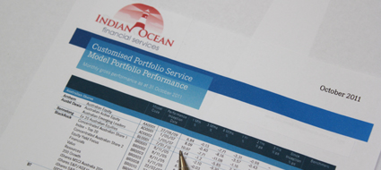
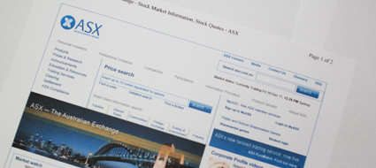

What Makes us Unique |
|
High quality independent advice putting clients interests as priority
Indian Ocean Financial Services core vision is to provide clients with truly independent advice that add value so that our clients know that their adviser is not influenced by any other parties. To be able to do this we aim to comply with the strict regulations that govern the use of the terms "independent" and "unbiased" under the corporation law. However compliance with the whole definition is unfortunately impossible as some financial products of our existing clients pay commission implemented by their previous adviser and cancellation would result in loss of valuable insurance benefits. To compensate these clients we rebate these commissions back if they agree to establish a long term relationship in which we review the clients financial planning at least on an annual basis. What advantages do our clients receive from our independent, non-aligned business status?
Our aspirations to comply where possible to the definition of independent has been very important to us and has been embraced by our growing number of clients and high satisfaction rates |
Skills and education to stay on top of the game
Our private client adviser is tertiary qualified and hold the CERTIFIED FINANCIAL PLANNER® professional designation, with additional degrees in taxation. He further continues to study to keep on top with new strategies, product development and legislation. The specific interest of our senior adviser "Mick Steffan" over the past is gearing, ethical investment and SMSF. He meets all the criteria of the Ethical Investment Association Australasia and follows its procedures to ensure all ethical advice is independent and appropriate for your needs. It is our requirement that all our private client advisers complete the Diploma of Financial Planning and are supervised and trained for a period of 3 years before providing advice directly to our clients. |
Financial planning, taxation and investment recommendations, all by your own private client adviser!
Our senior adviser is the only adviser in Geraldton that is a fully qualified financial planning adviser and a registered tax agent. The choice to acquire the skills of a tax adviser is a strategic, but obvious one as:
|
Direct investment preference philosophy

We prefer to invest directly into markets, such as Australian Securities Exchange listed securities, real estate and interest bearing securities, rather than via managed fund structures. We believe this investment method provides our clients with more flexibility and control, as well as being cost effective. As matter of fact, we where resently able to reduce the transaction cost for our financial planning clients even further to start from $10 per share trade! This direct investment philosophy together with separate managed accounts provide clients with optimum service and investment strategies that have been tested and adapted to cope with the volatility of our financial markets. Finally, direct investment allows our planners to control our client's cash flow even further while optimising rebalancing strategies by effecitve capital gains tax manangement. |